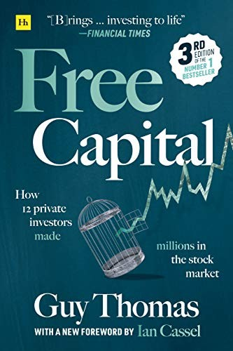

盖伊·托马斯（Guy Thomas）是英国一位独立投资者，此前曾担任精算咨询公司的研究精算师和大学讲师，1999年起转为全职个人投资。《自由资本》（Free Capital: How 12 Private Investors Made Millions in the Stock Market）出版于2011年，由英国知名财经出版社哈里曼出版社（Harriman House）发行。此书基于对逾20位英国私人投资者的深度访谈，从中精选出12位值得记录的案例：每位受访者均通过股市投资积累了至少100万英镑的财富，其中6位已是所谓"ISA百万富翁"——在英国免税个人储蓄账户（ISA）中积累了逾百万英镑，这在数学上意味着其复利年化收益率必须长期大幅超越市场平均水平。
全书12位主人公背景迥异：有拥有多个学位的学术背景者，也有完全自学成才、几乎没有受过正规金融教育的投资者；有将大部分资金集中于少数几只股票并长期持有的集中型投资者，也有每天执行数十笔交易的短线操盘手。托马斯将他们的投资风格归类为四种类型——"地理学家"（geographers，自上而下从宏观趋势入手）、"测量师"（surveyors，自下而上精研个股基本面）、"活动家"（activists，直接介入公司治理以推动股价）和"折衷派"（eclectics，融合多种方法）。这一分类框架简洁清晰，为读者理解不同投资风格的内在逻辑提供了有效的参照坐标。
这本书最常被拿来与杰克·施瓦格（Jack D. Schwager）的《市场奇才》（Market Wizards）系列相提并论——同样是对成功投资者的深度访谈，同样兼具洞见与故事性。但《自由资本》聚焦的是英国小盘股市场中的个人业余投资者，而非职业对冲基金经理。这一视角赋予本书独特价值：它告诉读者，在机构资金难以覆盖的细分市场中，个人投资者的深度研究与独立判断仍能创造显著超额回报。书中所有12位受访者均证明了一件事：亏损控制才是长期复利的基础——正是因为将损失保持在小范围内，少数几笔大赢家才得以在账户中充分发酵。知名微盘股投资人伊恩·卡塞尔（Ian Cassel）为本书第三版撰写序言，将其列为理解另类投资者路径的必读书目。
在投资方法论之外，《自由资本》也触及了一个更深层的议题："自由资本"这一概念，在托马斯笔下不仅指可以自由支配的资金，更指一种心理状态——从职场层级、社会期待与他人评价中解脱出来，以独立思考者的身份参与市场。书中记录了12种截然不同的人生轨迹，但所有轨迹都汇聚在同一个出发点：选择了一条不依赖机构与职称、而依赖独立判断与持续学习的路。托马斯引用了一句话来概括个人投资的优势："个人投资不需要妥协、自我推销、管理技巧或圆滑手腕；它只需要几个正确的决定。"